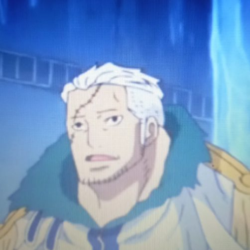

Natanael Figueroa
Estudiante DUOC UC - Ingeniería en informática
Nata's Drip nació de una idea sencilla: ¿Por qué vestir como todos cuando puedes vestir algo que realmente te
representa?
Somos una tienda de ropa alternativa enfocada en personas que encuentran inspiración en la música, los videojuegos, el internet,
los memes, el arte y todas esas pequeñas obsesiones que terminan convirtiéndose en parte de nuestra identidad.
Nuestro proyecto comenzó entre amigos que compartían el gusto por las camisetas que tenían algo que decir. No queríamos crear
otra tienda llena de diseños genéricos que simplemente siguieran una tendencia. Queríamos prendas capaces de representar gustos,
comunidades y momentos que forman parte de la vida de quienes las usan.
Así nació Nata's Drip.
Porque una camiseta puede ser mucho más que una camiseta.
Puede decir qué música escuchas.
Puede mostrar el videojuego que marcó una etapa de tu vida.
Puede representar un meme que llevas años repitiendo.
O simplemente puede ser una camiseta que viste y pensaste "Este soy yo".
Nuestra misión es ofrecer ropa alternativa que permita a cada persona
expresar su personalidad, gustos e intereses a través de lo que viste.
Buscamos crear una tienda accesible, diversa y cercana, donde diferentes
comunidades puedan encontrar diseños con los que se sientan identificadas,
sin tener que limitarse a las tendencias tradicionales de la moda.

Estudiante DUOC UC - Ingeniería en informática
Estudiante DUOC UC - Ingeniería en informática